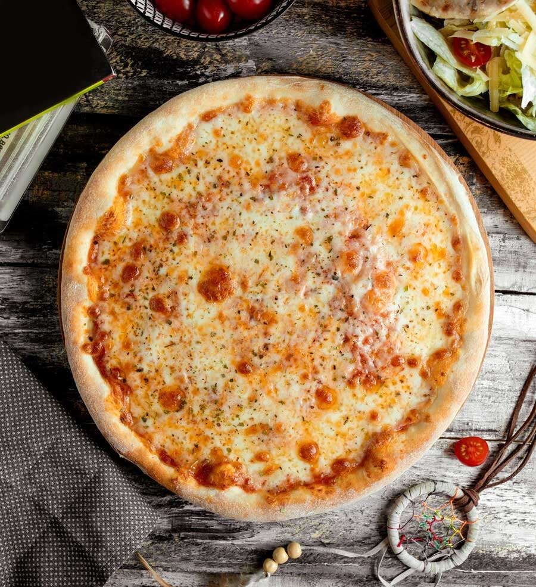

Pizza Margherita
Ingredients:
- Pizza dough
- Fresh tomatoes
- Fresh mozzarella cheese
- Fresh basil leaves
- Olive oil
- Salt
- Black pepper
Instructions:
- Preheat your oven to its highest setting (usually around 500°F or 260°C).
- Roll out the pizza dough into a circle on a floured surface.
- Place the dough on a pizza stone or baking sheet.
- Slice the tomatoes and arrange them evenly on the dough.
- Tear the fresh mozzarella into pieces and distribute it over the tomatoes.
- Sprinkle some salt and freshly ground black pepper.
- Drizzle a bit of olive oil over the pizza.
- Place the pizza in the preheated oven and bake for about 10-12 minutes, or until the crust is golden and the cheese is bubbly.
- Remove from the oven and top with fresh basil leaves before serving.